Uma investigação científica e pedagógica desenvolvida por estudantes de Enfermagem e Informática da Projetec 2026. Analisamos como a transformação de 76 mil metros quadrados de um antigo lote militar árido no Parque Realengo Susana Naspolini redefiniu a saúde pública, o microclima e a cidadania na Zona Oeste do Rio de Janeiro.
Durante mais de um século, a sociedade operou no paradigma da extração cega: retirar matéria-prima virgem, produzir em massa, consumir e descartar resíduos no meio ambiente. Na natureza, contudo, o conceito de lixo não existe: a matéria orgânica e os ciclos biogeoquímicos retroalimentam a vida continuamente.
Consumo acelerado de recursos finitos, sobrecarga de aterros sanitários e saturação da atmosfera com gases de efeito estufa e material particulado.
Inspirado nos ecossistemas naturais: remanufatura tecnológica, biofiltração vegetal, reciclagem contínua e valorização da matéria biológica.
Toque em cada material para examinar seu ciclo de vida, tempo de decomposição e alternativas ecológicas auditadas.
A pesquisa interdisciplinar conduzida pelos estudantes de Enfermagem demonstra que o meio ambiente não é um cenário externo: é um determinante fisiológico direto da vida humana. O calor excessivo de Realengo afeta o sistema circulatório e pulmonar dos cidadãos cotidianamente.
Realengo e Bangu registram historicamente as sensações térmicas mais elevadas do estado do Rio de Janeiro, com episódios frequentes que superam 50°C de sensação no verão.
Unindo a Informática e a Engenharia de Software, criamos a arquitetura do Projeto V.I.D.A.: uma malha de microcontroladores de baixo custo e sensores de alta precisão que convertem grandezas físico-químicas em dados acionáveis para a gestão urbana.
Um terreno de 76 mil metros quadrados que abrigou uma fábrica militar de armamentos por mais de um século foi transformado pela mobilização popular e pelo poder público no parque mais moderno e sustentável do Rio de Janeiro. Acompanhe abaixo o registro fotográfico autêntico dessa transformação.
Compare o terreno árido e murado da antiga fábrica com a infraestrutura verde e humana implantada hoje.
Registros fotográficos autênticos dos 6 principais equipamentos que compõem os 76.000 m² do Parque Realengo.
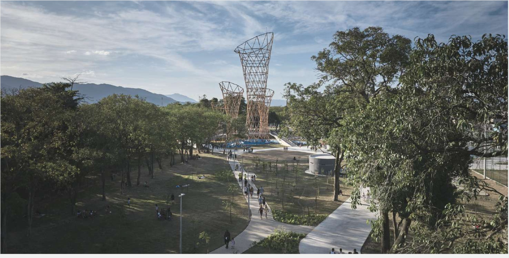
Foto: Rafael Salim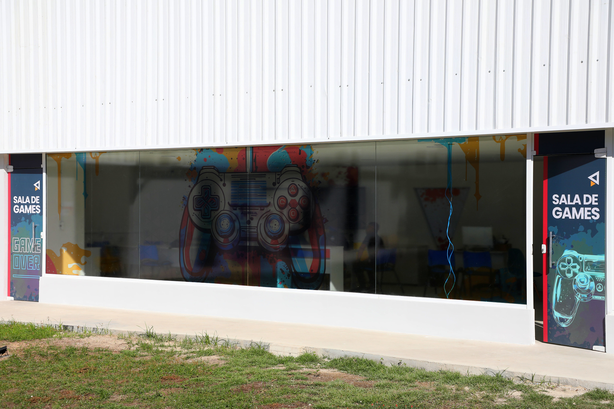
Foto: Prefeitura do Rio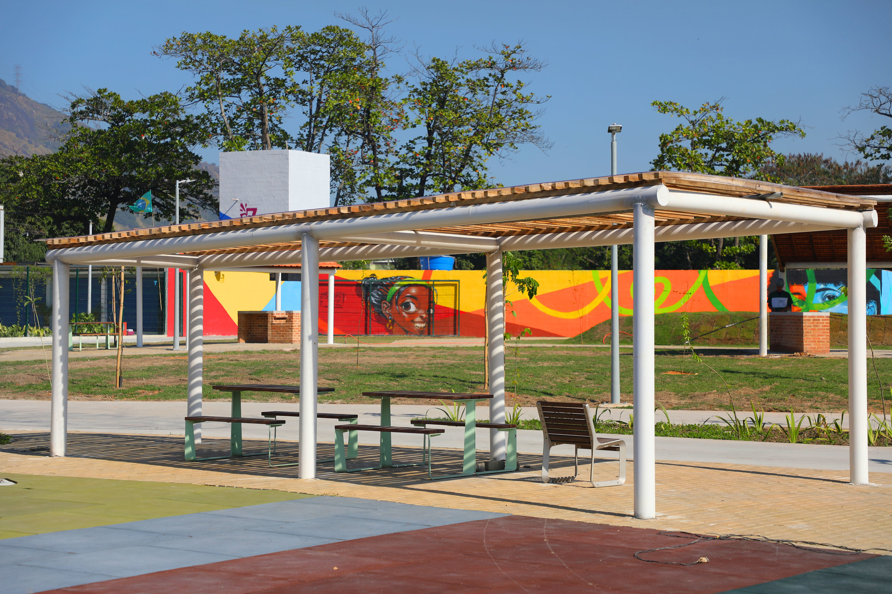
Foto: Prefeitura do Rio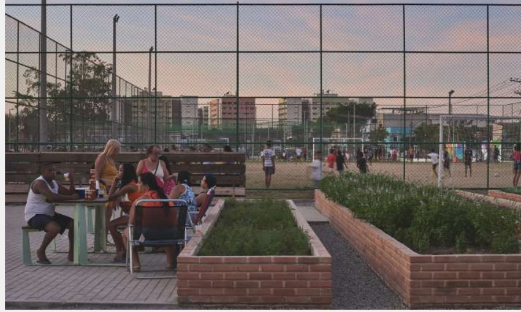
Foto: Rafael Salim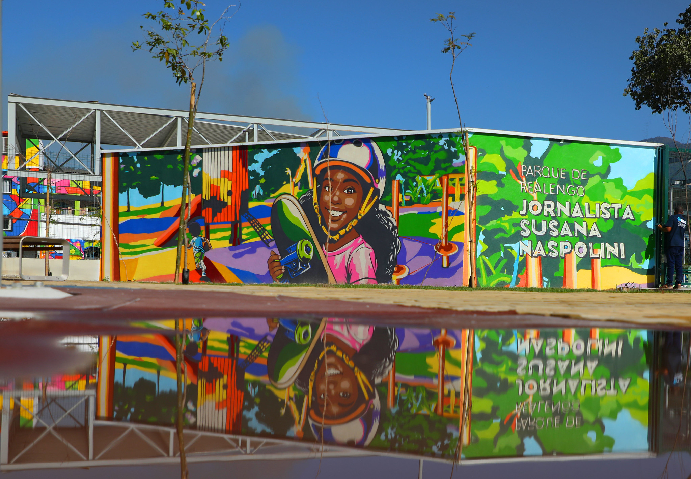
Foto: Prefeitura do RioO EcoCity articula rigor técnico, pesquisa experimental e responsabilidade social, estruturando as análises das turmas de Informática e Enfermagem em quatro eixos alinhados aos Objetivos de Desenvolvimento Sustentável (ODS) da Agenda 2030.
Documentação autêntica resgatada diretamente do acervo oficial de pesquisa do projeto (Google Drive): uniformes oficiais das turmas de Enfermagem e Informática, bottons de identificação, cartazes de campo e os rascunhos originais.
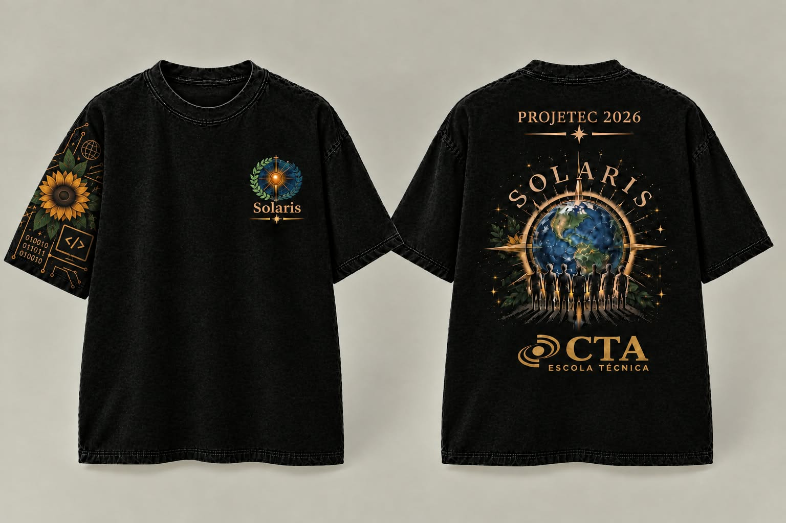
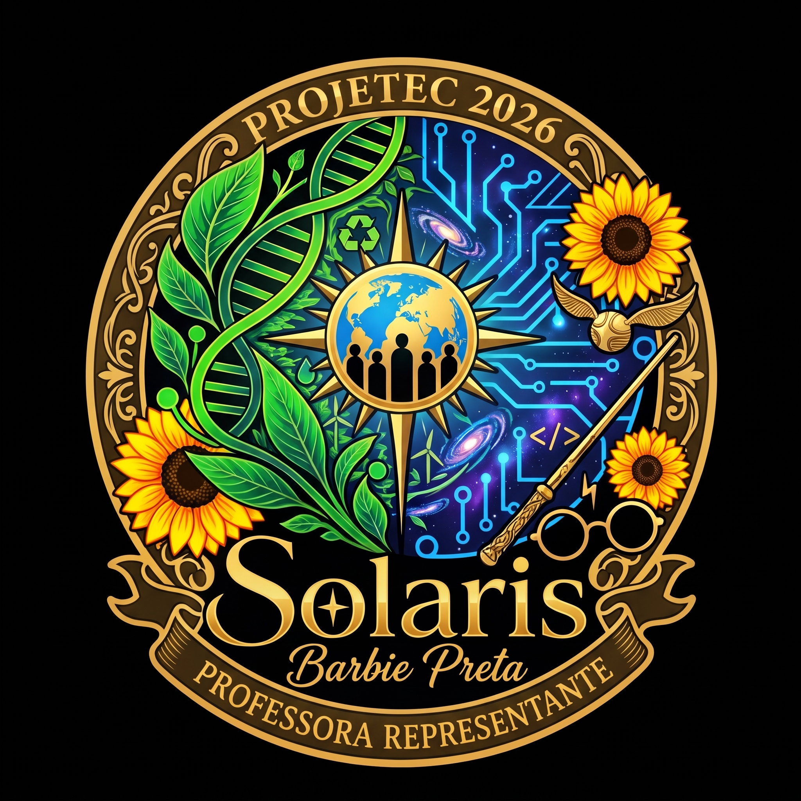
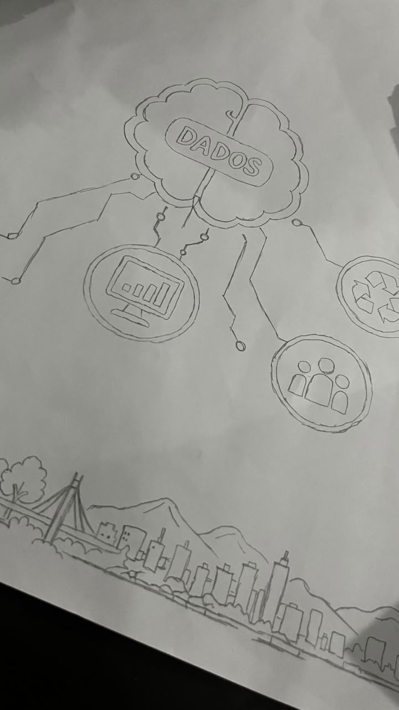
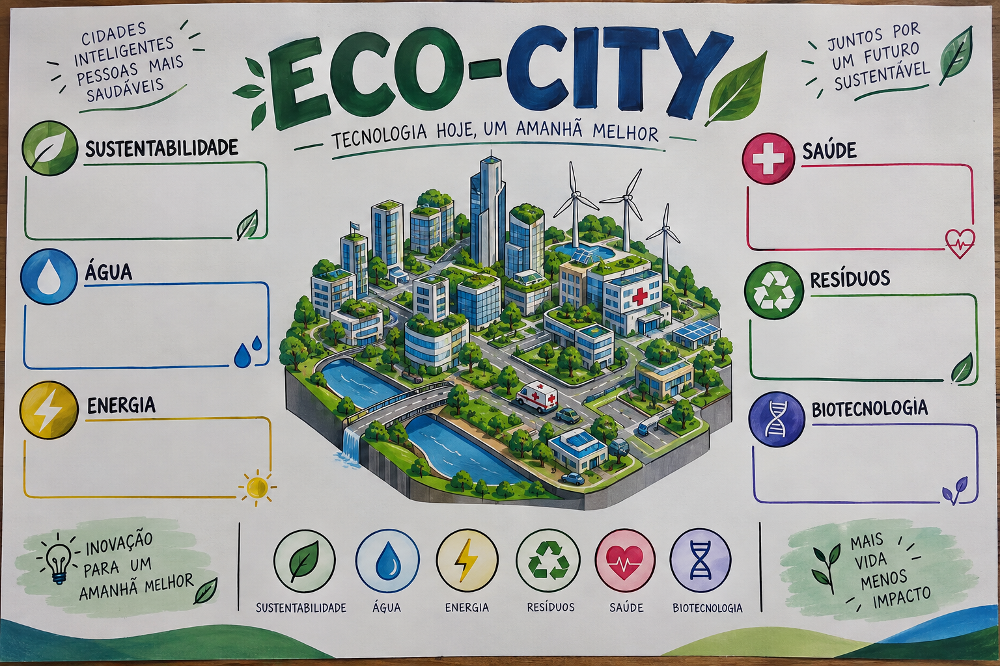
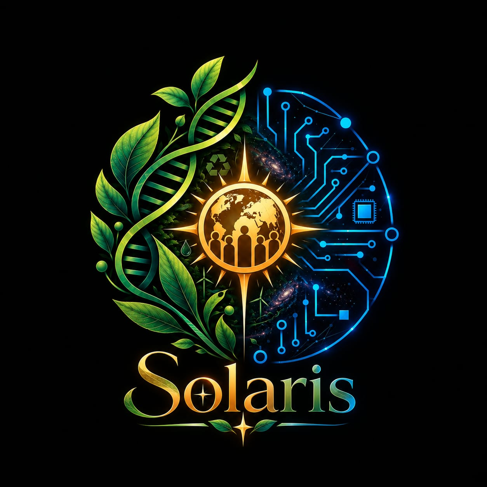
Um projeto de pesquisa é fruto da colaboração humana. Conheça os 8 estudantes das áreas de Informática e Enfermagem e a professora orientadora responsáveis pelo EcoCity na PROJETEC 2026.
Orientação metodológica contínua, rigor ético na pesquisa científica e articulação pedagógica interdisciplinar integrando os estudantes de Enfermagem e Informática para a realização da PROJETEC 2026.
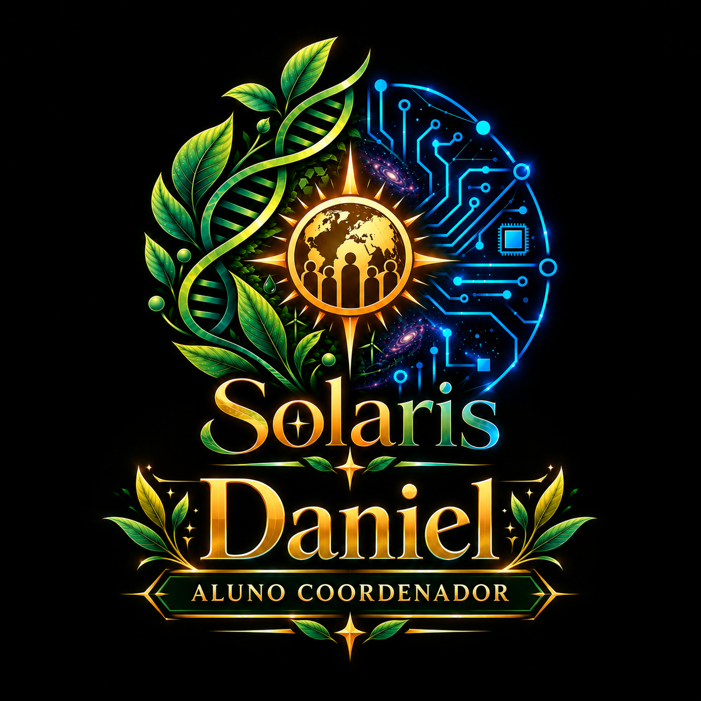
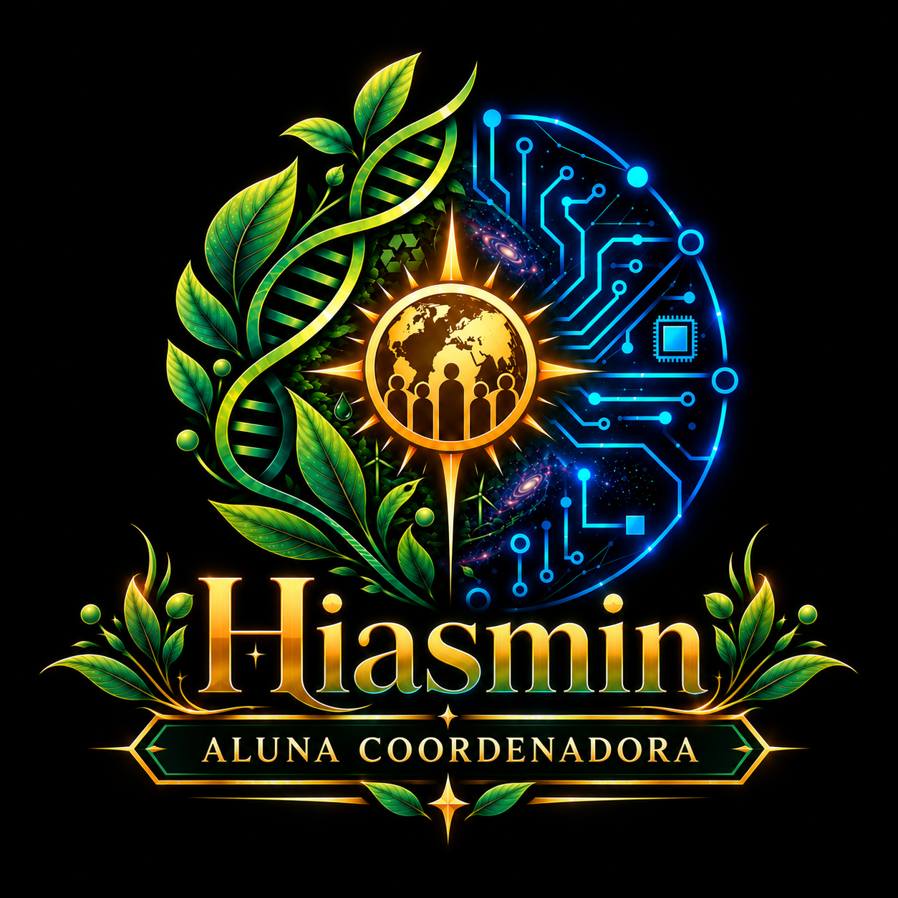
Todas as métricas populacionais, microclimáticas e sanitárias apresentadas nesta plataforma foram verificadas em registros públicos abertos: